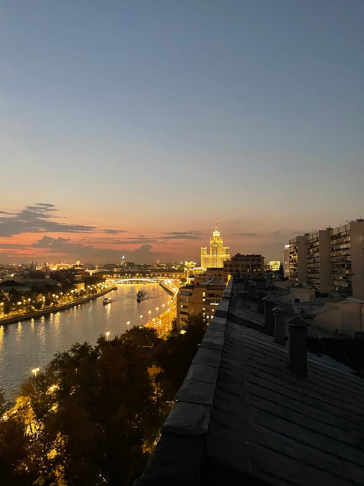
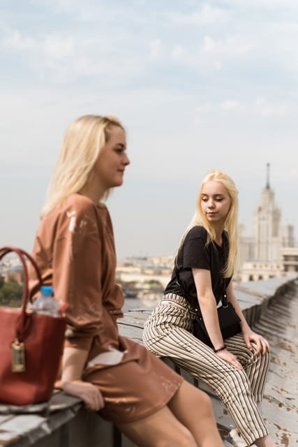
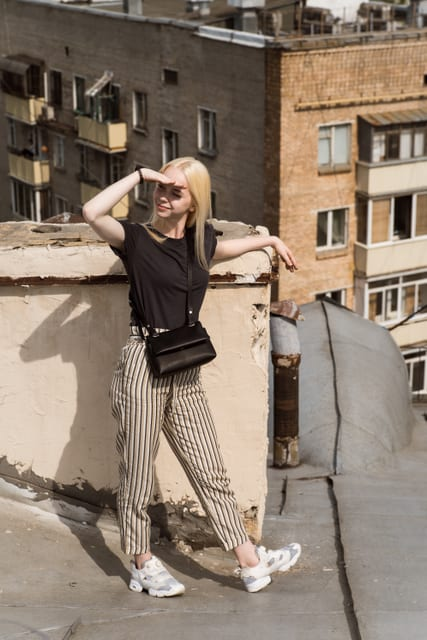
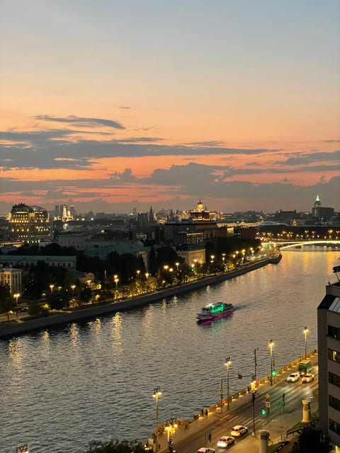
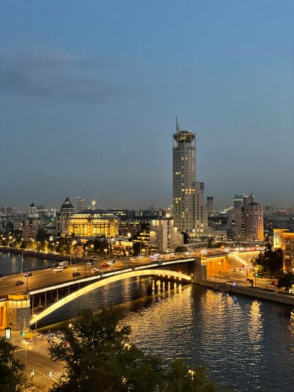
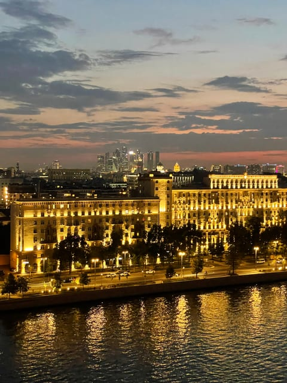
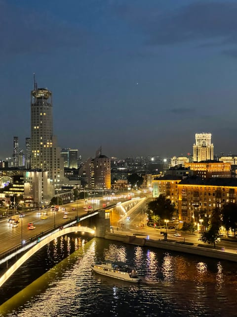

Скатная крыша
Крыша «Таганская Скатная»
Наклонная кровля старого дома над Таганкой: фактурный скат под ногами, Москва-река с мостами внизу и высотка на Котельнической прямо по курсу.
Эту крышу мы сейчас не предлагаем — посмотрите другие в каталоге.
Что видно с этой крыши
Эта крыша интересна в первую очередь тем, что она скатная: под ногами не ровная площадка, а наклонные листы металла с рёбрами и старыми парапетами. Такая фактура сама по себе работает в кадре — линии ската уводят взгляд вглубь и дают ощущение высоты, которого не бывает на плоской кровле.
Вид открывается на Москва-реку и набережные: отсюда хорошо читается Краснохолмский мост, поток машин по нему и подсвеченные фасады домов вдоль воды. Доминанта панорамы — высотка на Котельнической набережной, вечером она подсвечена и держит на себе весь кадр.
На горизонте, за излучиной реки, видны башни Москва-Сити — днём они серо-голубые, а в сумерках превращаются в светящуюся группу огней.
Когда лучше приходить
Работает и днём, и вечером — редкий случай. Днём скат и старая застройка дают спокойные светлые кадры, вечером включается подсветка высотки и набережных. Если цель именно портреты — приходите за пару часов до заката, пока свет мягкий и на скате нет жёстких теней.
Кому подойдёт
Лучший выбор для фотосессии: наклонная кровля даёт необычные ракурсы, которых не получить на ровной площадке. Подойдёт и для спокойной прогулки вдвоём — но учтите, что ходить по скату нужно аккуратно и строго там, где показывает сопровождающий.
Как попасть
Подняться можно только вместе с сопровождающим: мы встречаемся у дома в назначенное время, поднимаемся и коротко объясняем правила на площадке. Точный адрес и точку встречи присылаем после подтверждения записи — заранее их не публикуем. Что взять с собой: удобную нескользящую обувь и тёплый слой, вечером на высоте прохладнее, чем на улице. Подробнее — в гиде «Как попасть на крышу в Москве».
Фотографии
Кадры с этой крыши
Все снимки сделаны нами на этой локации — они показывают, что реально видно с точки.






FAQ
Вопросы про эту крышу
Не страшно ли ходить по скатной крыше?
Мы поднимаемся вместе и заранее объясняем, где можно стоять и двигаться, а где нельзя. Ходить нужно спокойно и слушать сопровождающего. Обязательно возьмите нескользящую обувь — это здесь важнее, чем на плоских крышах.
Чем эта крыша отличается от обычной Таганской?
Ракурсом и фактурой. На Таганской — плоская видовая площадка с панорамой на Кремль, здесь — наклонная кровля, река с мостами и высотка на Котельнической крупнее в кадре.
Можно ли снимать здесь днём?
Да. Это одна из немногих наших крыш, которая одинаково хорошо выглядит и при дневном свете, и вечером.
Над городом